Loading ...
|
4-2-3-1
|
Portugal | 2 | - | 1 | Croatia |
4-2-3-1
|
| HT 0-0 | ||||||
|
FIFA World CupFriday 3 July 2026
|
||||||
- Venue
- Toronto Stadium
- Attendance
- 43,036
- Referee
- Espen Eskås
Yellow card17'
Rúben Dias
Substitution62'
Vitinha
Bernardo Silva
- 3
Substitution63'
Pedro Neto
Francisco Conceição
Bruno Fernandes
Nélson Semedo
João Cancelo
Gonçalo Ramos
Penalty scored68'
Cristiano Ronaldo
Substitution81'
Cristiano Ronaldo
Rúben Neves
Goal90+4'
Gonçalo Ramos
Assist: Rafael Leão
Whistle45+5'
45+5'
Substitution46'
A. Budimir
I. Matanović
Goal53'
I. Perišić
Yellow card59'
L. Modrić
Substitution68'
M. Baturina
Mario Pašalić
Substitution90+2'
N. Vlašić
J. Gvardiol
Substitution90+6'
M. Kovačić
A. Kramarić
Yellow card90+8'
I. Perišić
Portugal | |
|---|---|
Goalkeeper | |
| 1 | Diogo Costa |
Defender | |
| 3 | Rúben Dias 17' |
| 13 | Renato Veiga |
| 20 | João Cancelo 63' |
| 25 | Nuno Mendes |
Midfielder | |
| 8 | Bruno Fernandes 63' |
| 15 | João Neves |
| 17 | Rafael Leão |
| 18 | Pedro Neto 63' |
| 23 | Vitinha 62' |
Forward | |
| 7 | Cristiano Ronaldo 68'81' |
Substitutes | |
| 2 | Nélson Semedo 63' |
| 9 | Gonçalo Ramos 63'90+4' |
| 10 | Bernardo Silva 62' |
| 21 | Rúben Neves 81' |
| 26 | Francisco Conceição 63' |
Croatia | |
Goalkeeper | |
| 1 | D. Livaković |
Defender | |
| 2 | J. Stanišić |
| 3 | M. Pongračić |
| 6 | J. Šutalo |
| 14 | I. Perišić 53'90+8' |
Midfielder | |
| 8 | M. Kovačić 90+6' |
| 10 | L. Modrić 59' |
| 13 | N. Vlašić 90+2' |
| 16 | M. Baturina 68' |
| 17 | P. Sučić |
Forward | |
| 11 | A. Budimir 46' |
Substitutes | |
| 4 | J. Gvardiol 90+2' |
| 9 | A. Kramarić 90+6' |
| 15 | Mario Pašalić 68' |
| 20 | I. Matanović 46' |


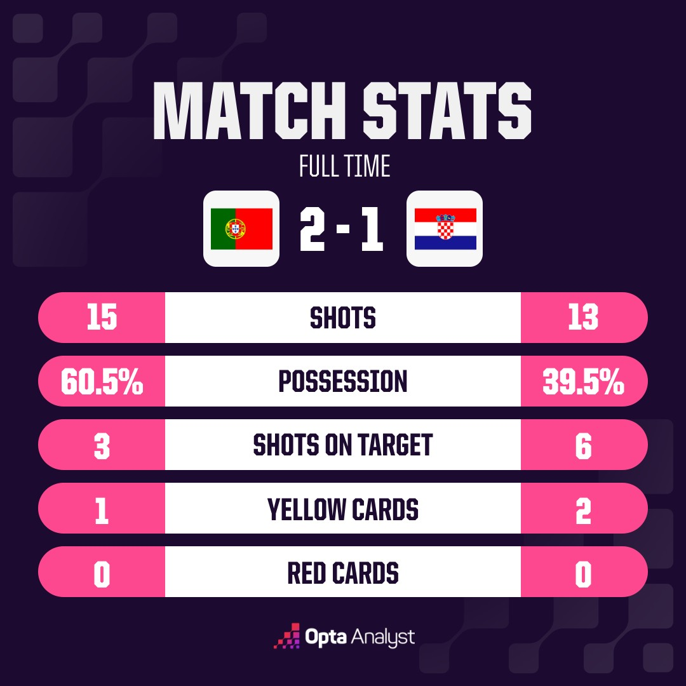
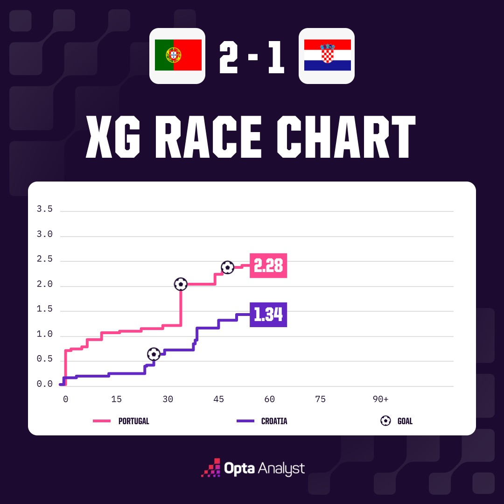
110'
Portugal are undefeated in their last 4 games in the FIFA World Cup, their last longer unbeaten streak was from 22nd June 2014 to 25th June 2018, a run of 5 games.
110'
Portugal have won after conceding the opening goal in the FIFA World Cup for the first time since 23rd July 1966 against Korea DPR (11 games without a win).
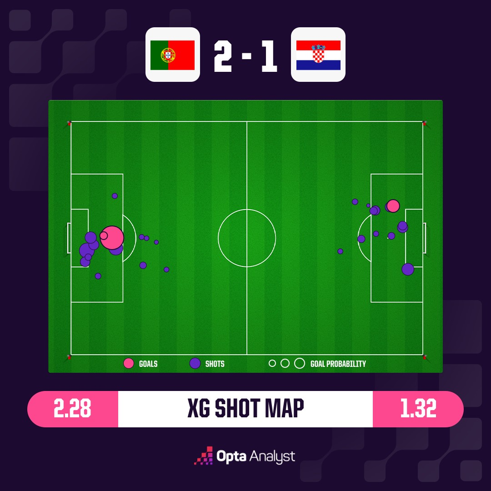
90+19'
IT’S ALL OVER! Portugal have taken the victory, winning 2-1 thanks to goals from Gonçalo Ramos and Cristiano Ronaldo. Portugal can celebrate, but Croatia will have to lick their wounds.
90+19'
There is plenty of possession for Croatia, with 72.73% compared to Portugal 27.27 % in the last 15 minutes. However, Croatia have not been able to turn that dominance of the ball into a goal.
90+15'
Decision overturned! The referee’s original call is deemed to be wrong by VAR, and after a check, it has been changed. The technology has played a major role there.
90+15'
Decision checked. VAR is going to look at this incident again, so this decision may well not stand. Let’s wait and see what the officials do here.
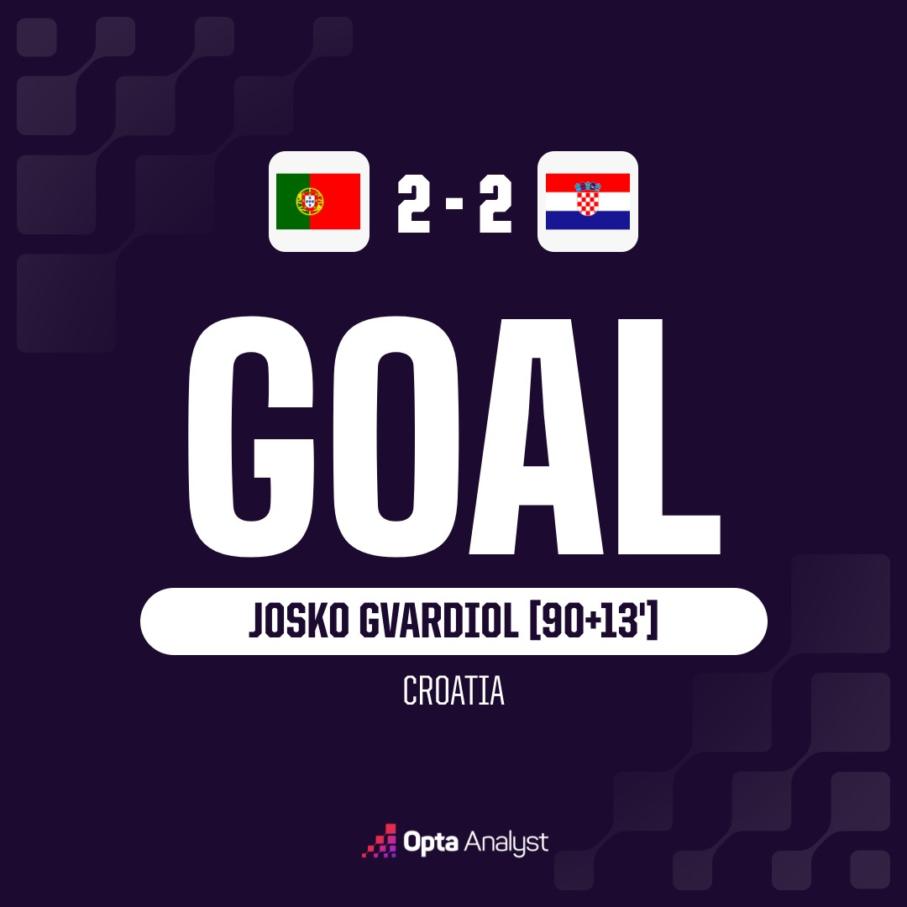
90+13'
The Portugal defence steps up in time and there is a frustration for Mario Pašalić, who thought they were through until the flag goes up to signal offside.
90+12'
A chance goes begging as Francisco Conceição gets off a shot that does not hit the target. They might have done better with that one, but instead it is a goal-kick to Croatia.
90+9'
It's all hands on deck for Portugal as they defend their lead, making a wave of critical blocks and clearances
90+9'
Shot blocked! Igor Matanović unleashes an attempt at goal, but the ball does not reach its target thanks to Gonçalo Ramos, who makes a solid block to stem the danger – for now.
90+9'
Corner! Croatia are pushing for a goal and now they have an opportunity from this set-piece.
90+8'
A yellow card for Croatia's Ivan Perišić. They will have to walk a tightrope for the rest of this match, and Portugal will likely look to target them and draw a second bookable offence.
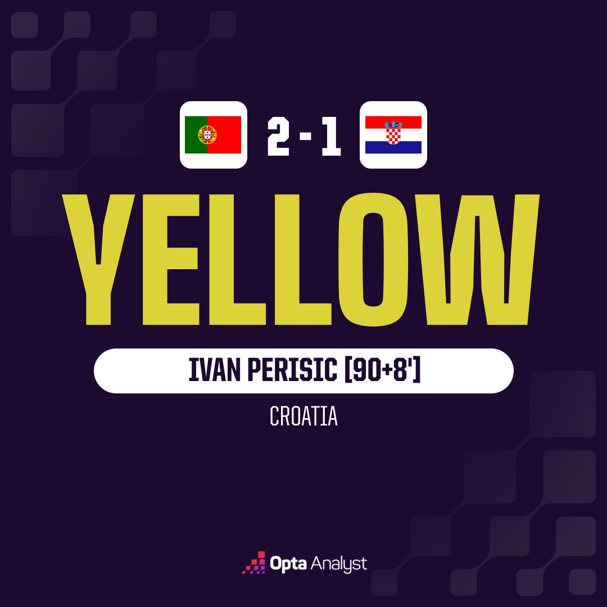
90+8'
Ivan Perišić goes in on Rúben Dias and concedes a foul. The free-kick is not in a particularly dangerous area from Croatia’s viewpoint, though.
90+6'
Andrej Kramarić is making his 17th appearance in the FIFA World Cup.
90+6'
Substitution! Andrej Kramarić replaces Mateo Kovačić for Croatia as the manager shuffles the pack. Can Andrej Kramarić make an impression as this match continues?
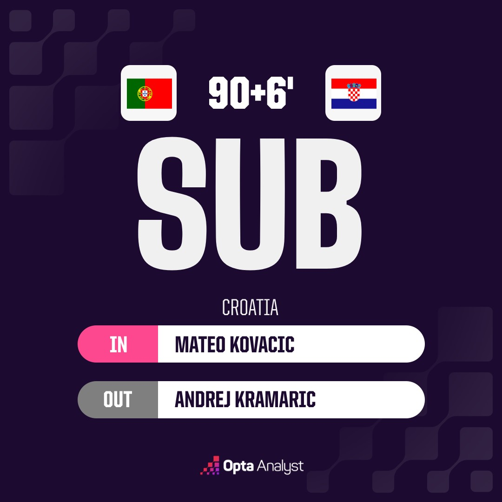
90+4'
Rafael Leão has assisted his first goal in the 2026 FIFA World Cup.
90+4'
GOAL! Will that be the winner for Portugal? They have gone ahead in the closing stages thanks to Gonçalo Ramos, who kept his cool to finish from inside the area. Will they hold on, or can Croatia fight back?
90+4'
Gonçalo Ramos has scored his first goal in the 2026 FIFA World Cup, netting for the first time since 6th December 2022 against Switzerland.
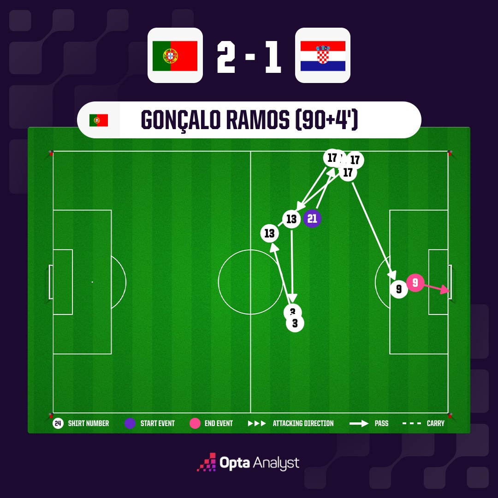
90+2'
Nikola Vlašić’s match is over as Croatia decide to make a substitution. Josko Gvardiol enters the field in what looks like a tactical change.
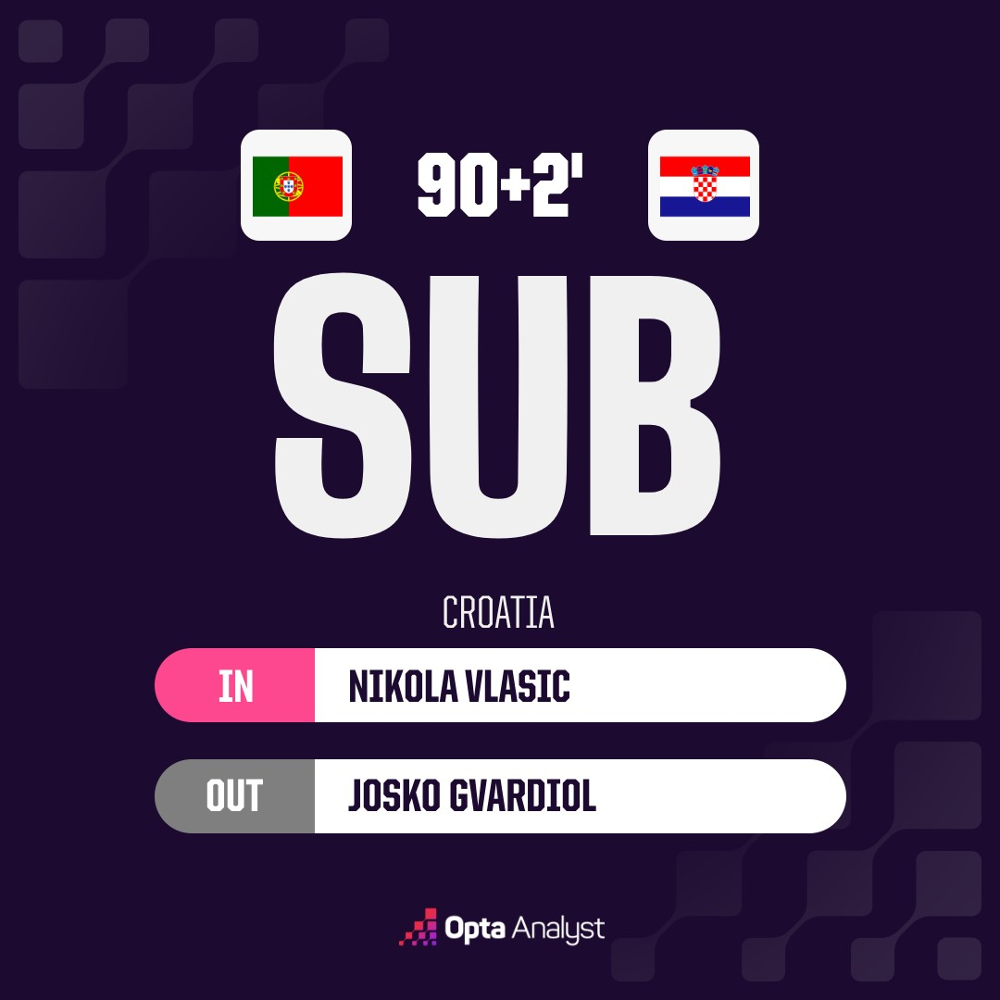
90+1'
MISS! The score remains 1-1, with Croatia relieved after Portugal’s Gonçalo Ramos goes for goal but sends their attempt off target. Not one to write home about, that one.
90+1'
Corner! Portugal are pushing for a goal and now they have an opportunity from this set-piece.
90+1'
Cautious stuff from Portugal as we enter the business end. Another measured passing move as both teams seem content with a point at this stage.
89'
MISSED! That is really poor from Mario Pašalić, who fails to convert from a golden opportunity, with the goal gaping. Will Croatia pay for their profligacy, or can they put that miss behind them?
87'
A chance goes begging as Renato Veiga gets off a shot that does not hit the target. They might have done better with that one, but instead it is a goal-kick to Croatia.
81'
The Portugal manager is looking to the substitutes’ bench, bringing on Rúben Neves in place of Cristiano Ronaldo. Will the change make a difference? Let’s find out!
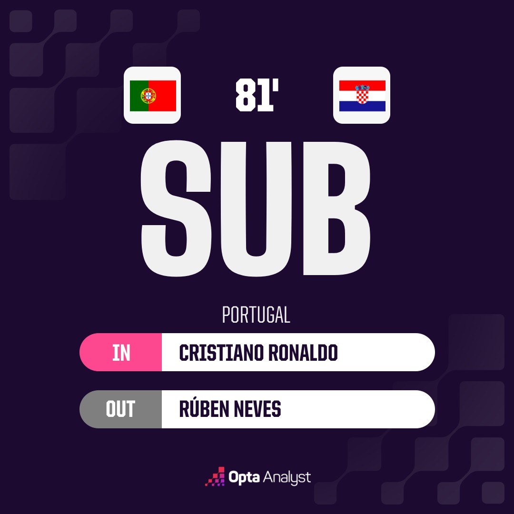
80'
Offside! As Croatia search for the goal they need, Petar Sučić looks set to get in behind the defensive line, but the assistant's flag is up.
77'
MISS! How has that not gone in? A complete lack of composure shown from Igor Matanović, who squanders a golden chance for Croatia, whose coach looks on frustrated from the touchline. A real let off for Portugal!
76'
A chance goes begging as Igor Matanović gets off a shot that does not hit the target. They might have done better with that one, but instead it is a goal-kick to Portugal.
76'
With 15 minutes of normal time remaining, it is Portugal who have had more of the ball, with 65.12% compared to Croatia’s 34.88%.
75'
Diogo Costa has made 5 saves, the first time he has made at least 5 saves in a match in the FIFA World Cup since facing Colombia on 28th June 2026 (6 saves).
75'
Corner now for Croatia, as they see a shot from Mateo Kovačić deflected out of play for a set-piece. Portugal have some defending to do, here. Could this result in a big opportunity?
75'
Save! A long-range strike from Mateo Kovačić was heading in, but Diogo Costa got to it to parry it away from danger.
75'
OFF THE POST! So close for Croatia, as Mateo Kovačić strikes the woodwork. That's a lucky escape for Portugal.
74'
A rash challenge from Igor Matanović, who sends Nélson Semedo tumbling, giving Portugal a free-kick. It is not in a threatening position, but it gives them a chance to get back on the ball.
68'
A substitution for Croatia sees Martin Baturina replaced by Mario Pašalić. There does not appear to be any obvious sign of an injury, so that is a tactical switch.
68'
Portugal have won 1 penalty in the 2026 FIFA World Cup, only Argentina (2) and Switzerland (2) have been awarded more.
68'
GOAL! We are all square at 1-1 after Cristiano Ronaldo converts their penalty. Will Portugal go on and win this one from here, or can Croatia go and restore their lead?
68'
Cristiano Ronaldo has scored his 11th goal in the FIFA World Cup.
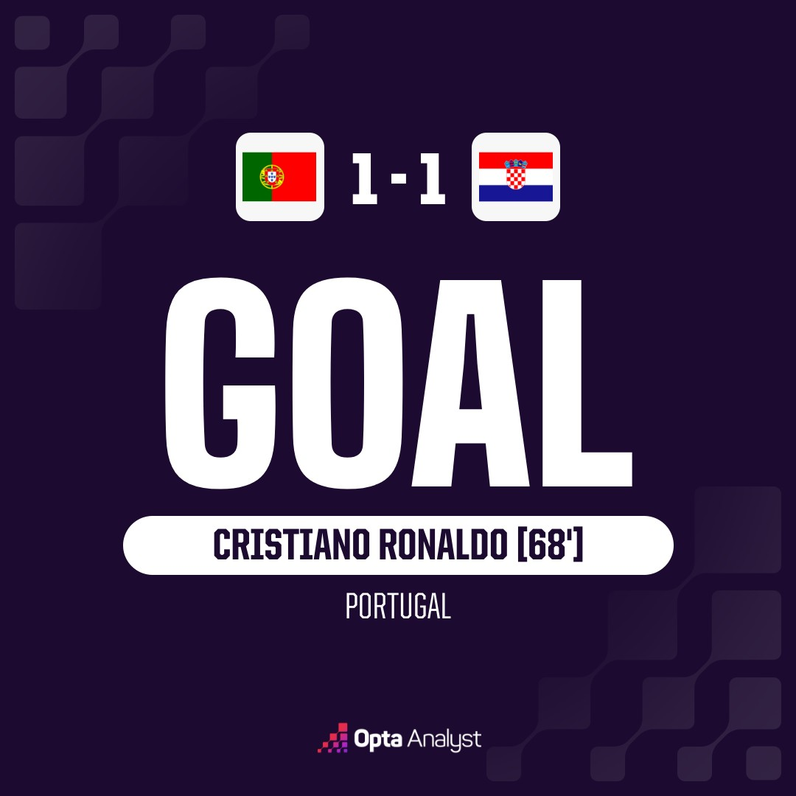
66'
This match is into the last 25 minutes now, and before it goes into the final stages, let’s check on the shots. There have been 17 in total – 10 from Portugal, and 7 from Croatia. Of those attempts, 4 have hit the target – 1 from Portugal and 3 from Croatia.
65'
VAR overturns the decision! The video official sees enough reason for the original call to be overturned, and so elects to intervene here.
65'
VAR is reviewing the incident. Will the decision stand, or will it be overturned?
64'
SPOT-KICK! A clumsy decision by Nikola Vlašić, who has committed a foul inside Croatia’s area, and now Portugal have the chance to get back into this game. They just have to convert this penalty…
63'
Corner! Portugal are pushing for a goal and now they have an opportunity from this set-piece.
63'
Substitution! Gonçalo Ramos replaces João Cancelo for Portugal as the manager shuffles the pack. Can Gonçalo Ramos make an impression as this match continues?
63'
Bruno Fernandes’s match is over as Portugal decide to make a substitution. Nélson Semedo enters the field in what looks like a tactical change.
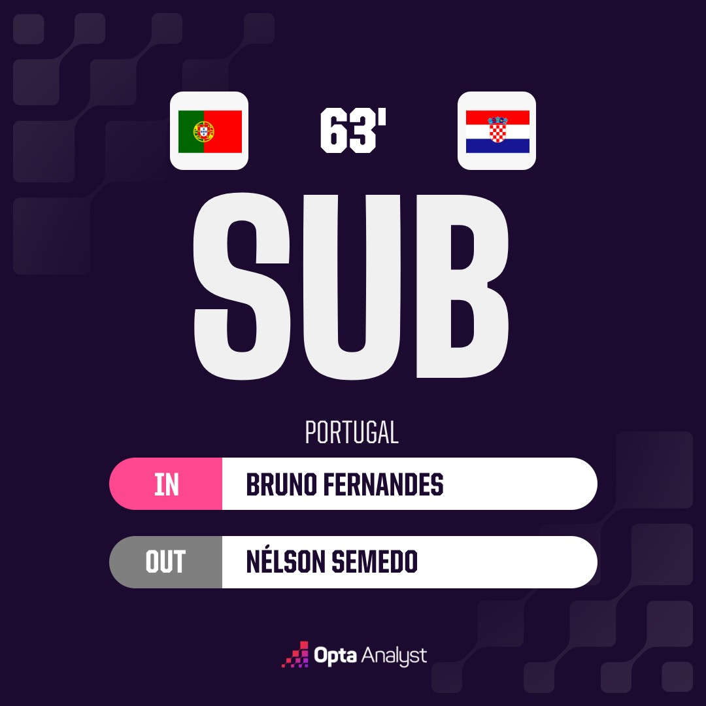
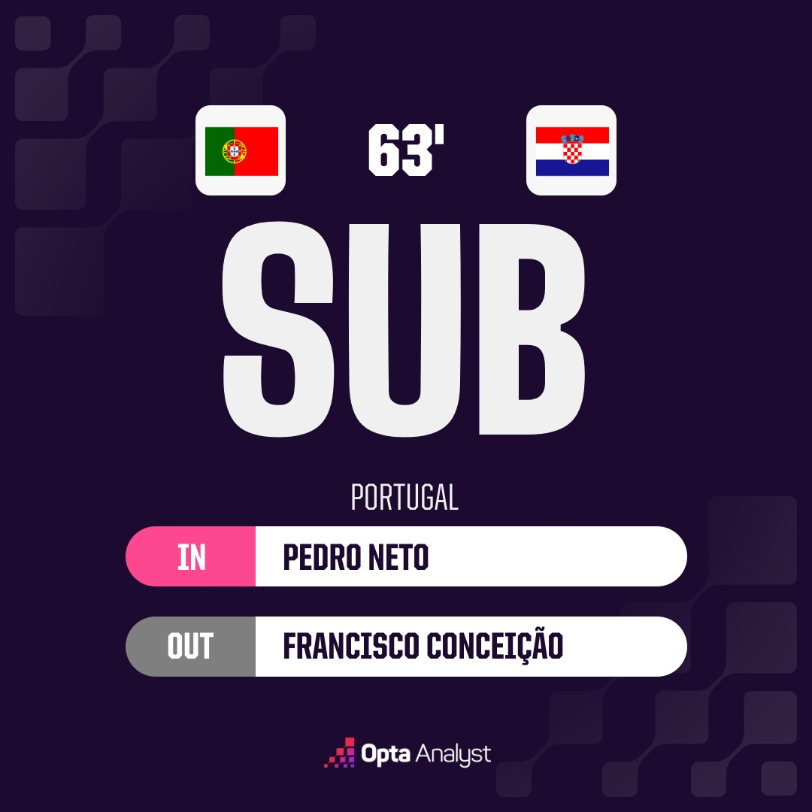
63'
The Portugal manager is looking to the substitutes’ bench, bringing on Francisco Conceição in place of Pedro Neto. Will the change make a difference? Let’s find out!
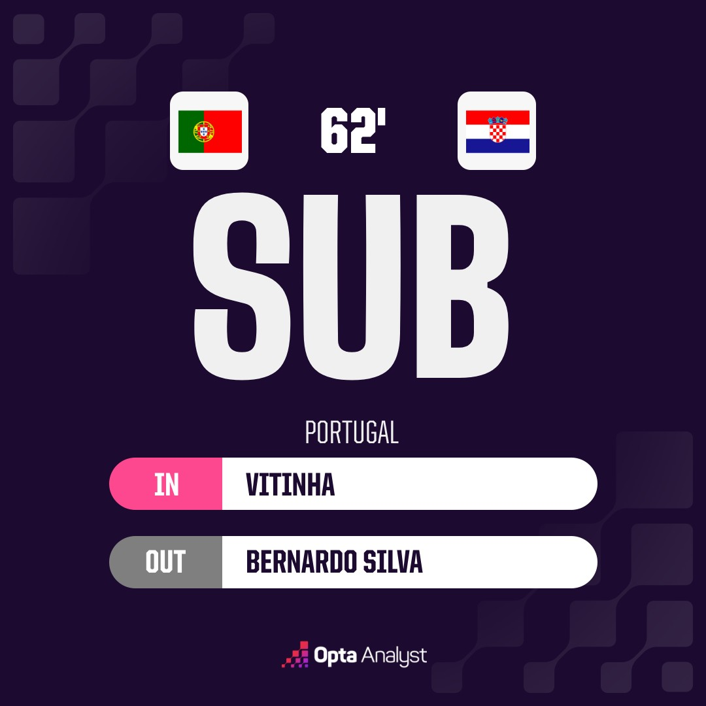
62'
Portugal are making a tactical change. Vitinha is leaving the field and in their place comes Bernardo Silva – we will soon see if this switch has the desired impact.
61'
Offside! Cristiano Ronaldo thought they were through on goal, but the Croatia defence stepped up in time to catch them offside, and the assistant referee puts their flag up.
59'
A yellow card for Croatia's Luka Modrić. They will have to walk a tightrope for the rest of this match, and Portugal will likely look to target them and draw a second bookable offence.
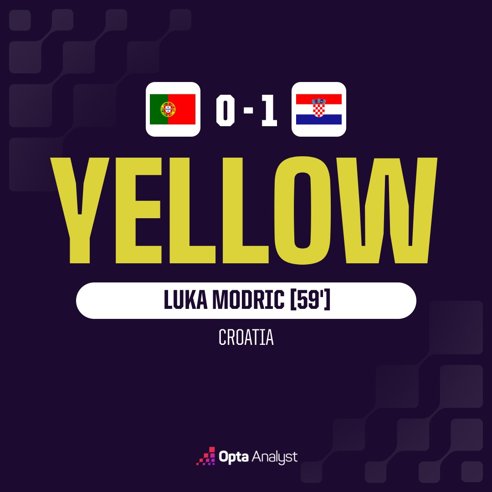
59'
A rash challenge from Luka Modrić, who sends Vitinha tumbling, giving Portugal a free-kick. It is not in a threatening position, but it gives them a chance to get back on the ball.
59'
CORNER! The pressure is building for Croatia as they win a set-piece after Petar Sučić's attempt is blocked by Diogo Costa and diverted out of play.
57'
Free-kick! A foul from Luka Modrić on Bruno Fernandes. It is well away from Croatia’s goal, so it is unlikely to result in a chance for Portugal.
56'
The Portugal defence steps up in time and there is a frustration for Nikola Vlašić, who thought they were through until the flag goes up to signal offside.
53'
Croatia have avoided defeat in their last 7 matches when scoring first in the FIFA World Cup, since a 1-3 loss to Brazil on 12th June 2014.
53'
Ivan Perišić has scored his seventh goal in the FIFA World Cup.
53'
GOAL! The drama continues as Croatia take the lead, courtesy of a goal from Ivan Perišić. There is still plenty of time remaining for more potential twists and turns, but as things stand Croatia are on track for victory.
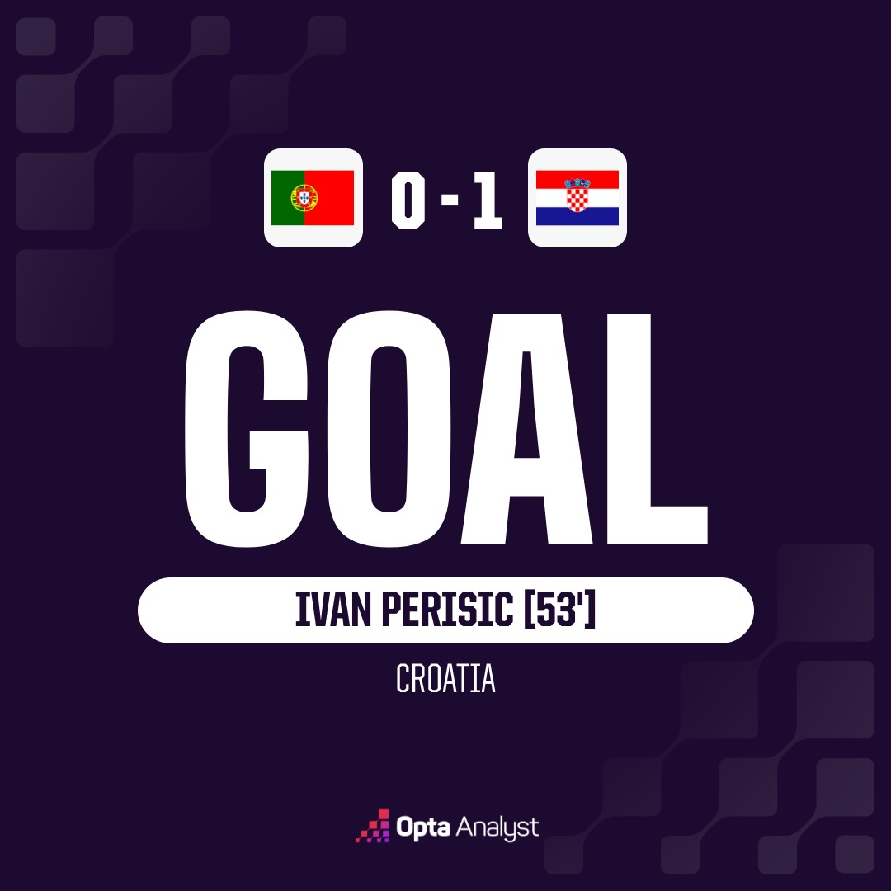
52'
There is plenty of possession for Portugal, with 66.95% compared to Croatia 33.05% in the last 15 minutes. However, Portugal have not been able to turn that dominance of the ball into a goal.
52'
A free-kick to Croatia, as Vitinha goes in and fouls Mateo Kovačić. However, Portugal will not mind giving one away in this area too much, with plenty of distance to their goal.
51'
This could be a chance for Portugal, after Igor Matanović fouls Vitinha, handing them a free-kick in a threatening area. A good set-piece from here could really test the Croatia defense!
49'
A chance goes begging as Nikola Vlašić gets off a shot that does not hit the target. They might have done better with that one, but instead it is a goal-kick to Portugal.
48'
What a miss! That was a huge chance for Mateo Kovačić, but they have failed to convert. What an opportunity that was for Croatia.
46'
A substitution for Croatia sees Ante Budimir replaced by Igor Matanović. There does not appear to be any obvious sign of an injury, so that is a tactical switch.
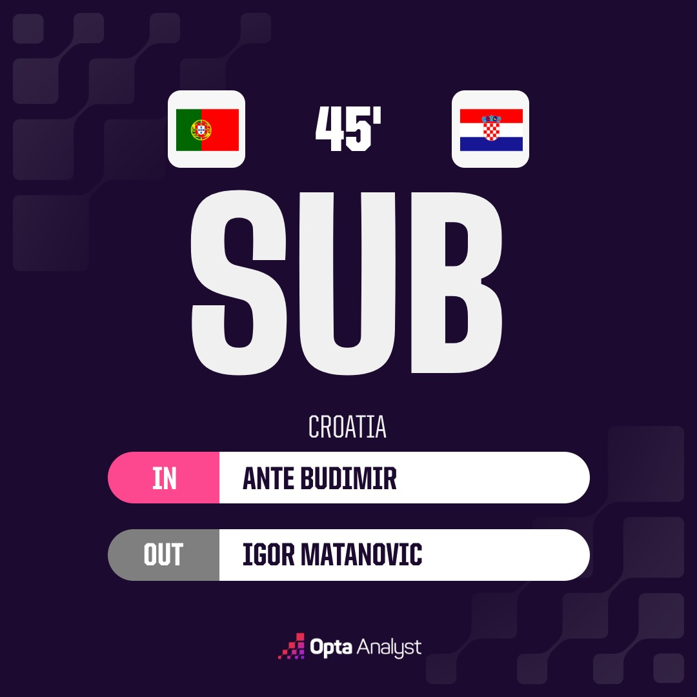
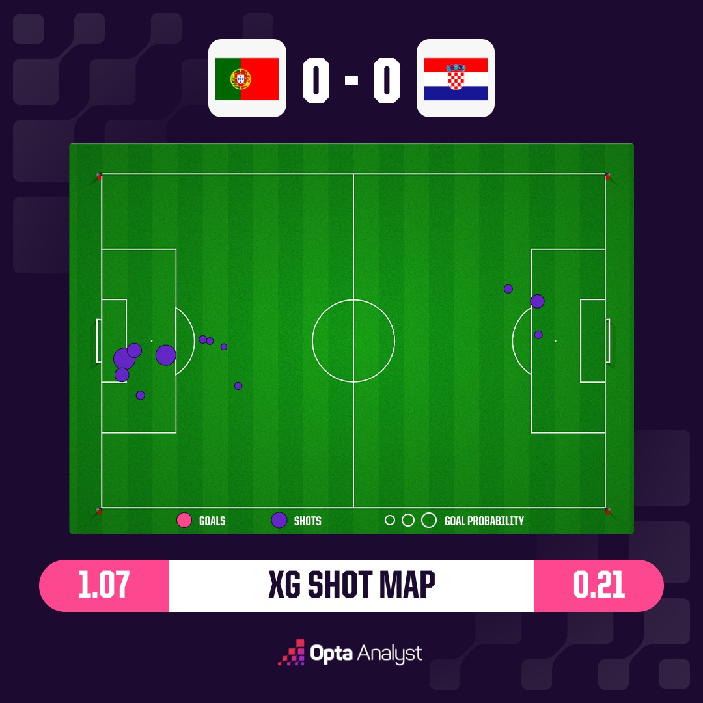
45+5'
Half-time! The referee blows the whistle and it is time for the interval. As we reach the break it is Portugal 0-0 Croatia at Toronto Stadium.
45+4'
A rash challenge from João Neves, who sends Josip Šutalo tumbling, giving Croatia a free-kick. It is not in a threatening position, but it gives them a chance to get back on the ball.
45+3'
Free-kick! A foul from Rúben Dias on Ante Budimir. It is well away from Portugal’s goal, so it is unlikely to result in a chance for Croatia.
45+2'
A rash challenge from Ante Budimir, who sends Rúben Dias tumbling, giving Portugal a free-kick. It is not in a threatening position, but it gives them a chance to get back on the ball.
45+1'
No luck! Rafael Leão takes on a shot that, had they got it right, might have been set to test the goalkeeper, but instead it is sent off target and Croatia come away unscathed.
45+1'
A free-kick in a dangerous position now for Portugal, after a foul from Petar Sučić on Nuno Mendes. Can Portugal make Croatia pay for that rashness from Petar Sučić?
44'
A lull in this match, as the teams prob and probe, but without much success. It has been 10 minutes since there was an attempt from either side, though Portugal are seeing more of the ball, with 76 per cent possession to Croatia’s 24 per cent during that time.
41'
Croatia have not had a shot on target so far in this game.
40'
Corner! The ball goes behind and now Portugal will aim to deliver a good ball into the penalty area and test that Croatia defence, which has been frustrating them in recent minutes.
37'
Portugal have had plenty of the ball in the last 15 minutes, with 72.79% possession compared to just 27.21% for their opponents. However, there’s not been any goal to come from that possessional dominance just yet.
37'
This could be a chance for Portugal, after Petar Sučić fouls Bruno Fernandes, handing them a free-kick in a threatening area. A good set-piece from here could really test the Croatia defense!
34'
Free-kick! A foul from Nikola Vlašić on Vitinha. It is well away from Croatia’s goal, so it is unlikely to result in a chance for Portugal.
34'
Shot blocked! Nuno Mendes unleashes an attempt at goal, but the ball does not reach its target thanks to Marin Pongračić, who makes a solid block to stem the danger – for now.
33'
Can Croatia survive here? They will have some defending to do after the ball is turned behind for a corner kick. Will Portugal take this opportunity and grab the goal they have been pushing for?
29'
The Portugal defence steps up in time and there is a frustration for Nikola Vlašić, who thought they were through until the flag goes up to signal offside.
28'
Great block from João Cancelo, as they get in the way of an attempt from Martin Baturina that might have been set to cause the goalkeeper some problems. Solid defending from the Portugal player.
24'
MISS! How has that not gone in? A complete lack of composure shown from João Neves, who squanders a golden chance for Portugal, whose coach looks on frustrated from the touchline. A real let off for Croatia!
23'
Corner! The ball goes behind and now Portugal will aim to deliver a good ball into the penalty area and test that Croatia defence, which has been frustrating them in recent minutes.
22'
Portugal are having plenty of the ball, with 65.00% possession in the last 15 minutes. However, they have been unable to transfer that possessional dominance into a goal during that period.
18'
This could be a chance for Croatia, after Renato Veiga fouls Petar Sučić, handing them a free-kick in a threatening area. A good set-piece from here could really test the Portugal defense!
17'
The referee goes to their pocket and pulls out a yellow card, which is brandished in the direction of Rúben Dias. Will they be able to avoid a second booking?
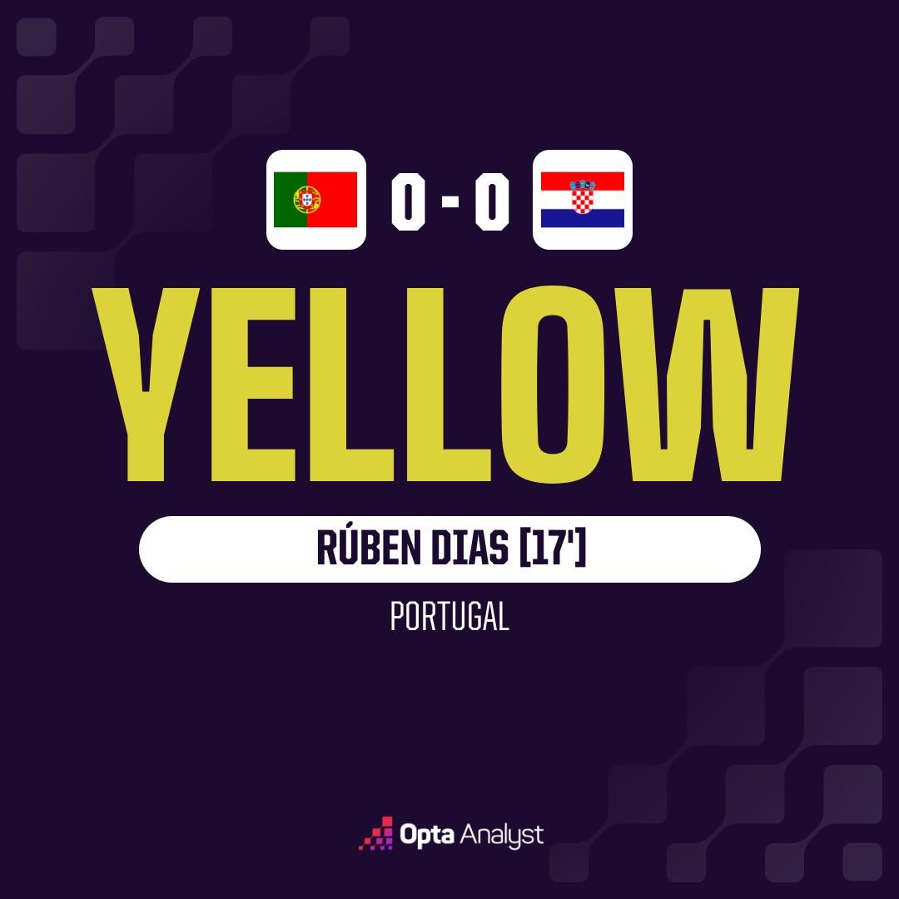
17'
A foul from Rúben Dias on Ante Budimir sees Croatia win a free-kick, but it is not in a dangerous position, so Portugal should be confident they can defend it easily enough.
16'
MISSED! That is really poor from Renato Veiga, who fails to convert from a golden opportunity, with the goal gaping. Will Portugal pay for their profligacy, or can they put that miss behind them?
14'
A rash challenge from João Cancelo, who sends Ivan Perišić tumbling, giving Croatia a free-kick. It is not in a threatening position, but it gives them a chance to get back on the ball.
13'
BLOCKED! That was close. Cristiano Ronaldo got off a shot, which was heading in, but Marin Pongračić was on hand to make a vital intervention. Great block!
11'
Can Portugal make this chance count? They have won a free-kick in a threatening position after a foul from Mateo Kovačić on Nuno Mendes. Will Croatia's defence be tested here?
10'
MISS! The score remains 0-0, with Portugal relieved after Croatia’s Ante Budimir goes for goal but sends their attempt off target. Not one to write home about, that one.
7'
A chance goes begging as João Cancelo gets off a shot that does not hit the target. They might have done better with that one, but instead it is a goal-kick to Croatia.
7'
It’s been tight so far, and Croatia are making sure it stays that way with strong defensive discipline and well-timed clearances.
6'
A free-kick to Portugal, as Petar Sučić goes in and fouls João Neves. However, Croatia will not mind giving one away in this area too much, with plenty of distance to their goal.
4'
That might have been going in! A fantastic block from Mateo Kovačić, who gets in the way of a goal-bound effort from Vitinha. Would the goalkeeper have been beaten? We will never know.
4'
BLOCK! An intervention from Josip Šutalo might have just prevented a goal, with the defending player getting in the way of an attempt from Bruno Fernandes. Solid defending there!
4'
SAVED! Good work from Dominik Livaković, who stands firm to deny Bruno Fernandes, who managed to get a shot away from inside the Croatia area.
3'
MISS! The score remains 0-0, with Portugal relieved after Croatia’s Ante Budimir goes for goal but sends their attempt off target. Not one to write home about, that one.
1'
Kick-off! Up and running at Toronto Stadium, with Croatia getting the ball rolling. Who will come out on top?
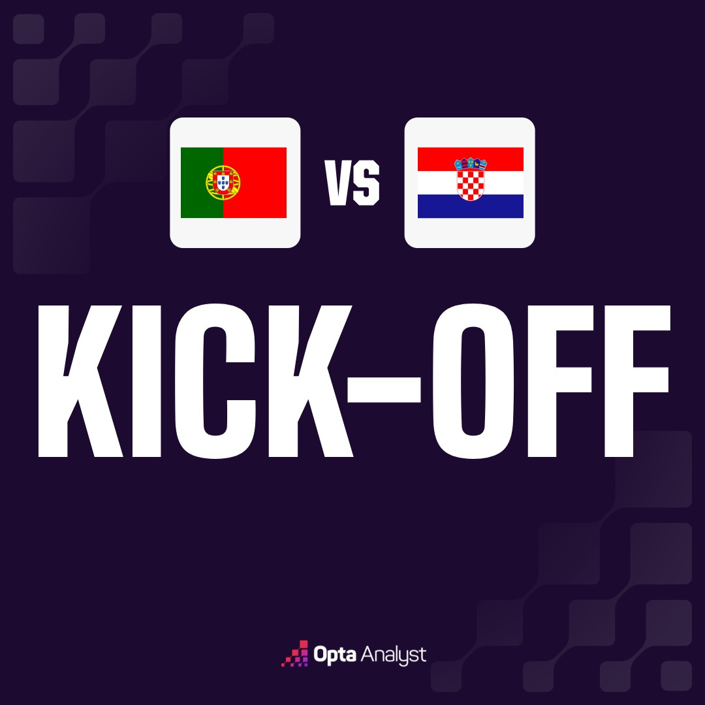
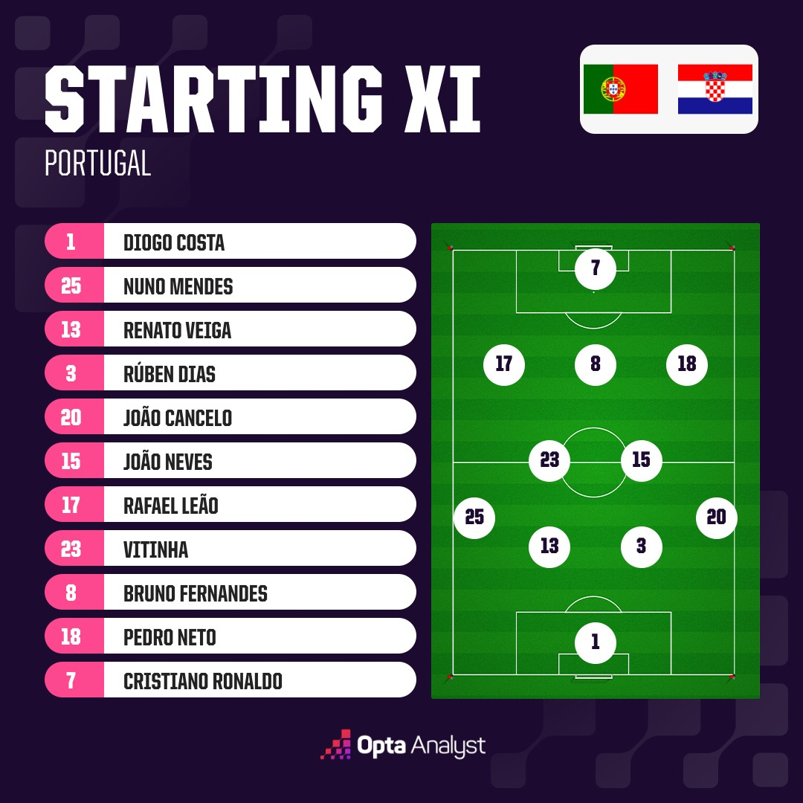
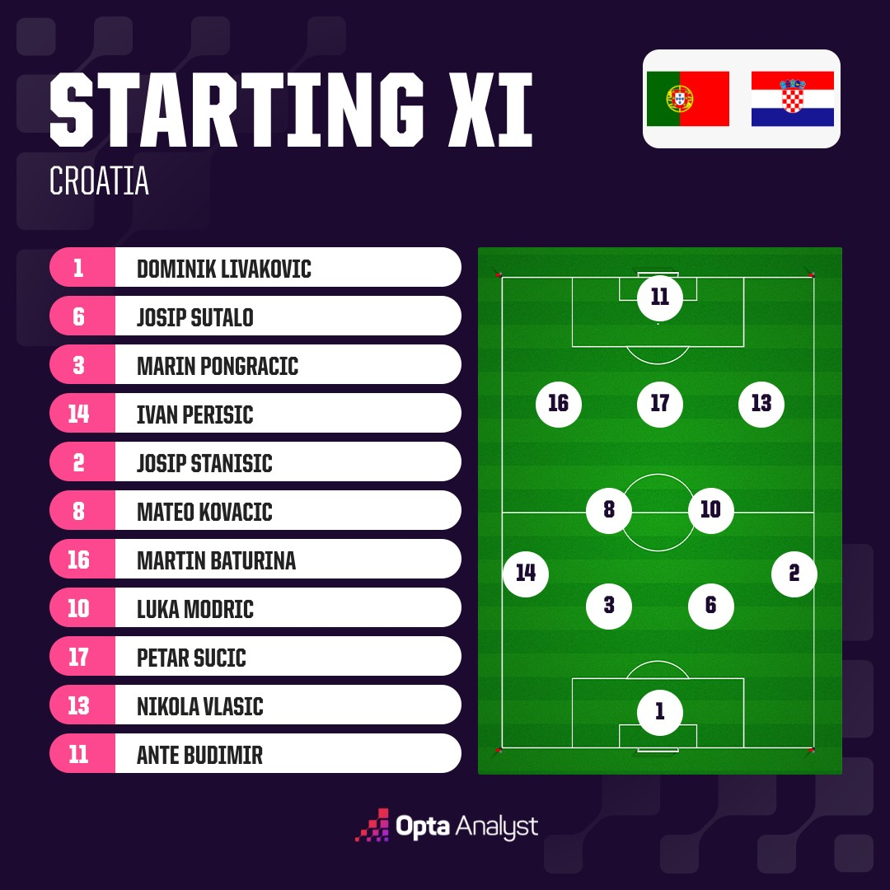
Luka Modrić is making his 23rd appearance in the FIFA World Cup.
Ivan Perišić is making his 21st appearance in the FIFA World Cup.
Mateo Kovačić is making his 19th appearance in the FIFA World Cup.
Cristiano Ronaldo is making his 26th appearance in the FIFA World Cup.
Portugal take on Croatia on Thursday for a FIFA World Cup Round of 32 clash at Toronto Stadium.
Portugal played out a 0-0 draw in their last group stage match against Colombia on June 27. They are unbeaten in their last eight games in all competitions.
Croatia won their last group stage game on June 27, beating Ghana 2-1 at Philadelphia Stadium. Petar Sucic and Nikola Vlasic scored in the win. In 2026, they have won four and lost three.
Both sides finished second in their respective groups. Croatia earned six points in group play, while Portugal had five points.
The previous fixture between the sides saw them play out a 1-1 draw in an UEFA Nations League League A match at Stadion Poljud in November 2024. João Félix scored Portugal's lone goal in the 33rd minute. Josko Gvardiol scored Croatia's only goal in the 65th minute.
Cristiano Ronaldo has caught the eye for Portugal in World Cup play. He leads the team with two goals, one of which has been the tone-setting first of the match. Croatia have been led by five players who have each netted once in this season's World Cup.
The Croatian side have scored in each of their three World Cup contests this season.
In their last six matches in all competitions, Portugal have won four and drawn two. The Portuguese side scored 12 and conceded three in that stretch, scoring first in five of the six contests. They had six first-half goals, while their opponents netted two times in the first 45 minutes. The Croatian side have won three and lost three in their last six. The Croatian side scored eight and conceded 11 over that period, netting first in three of the six. They had three goals in the first half, while their opponents netted four times before the break.
-
General
Possession 60.4% 60.39839.60239.6% Possession lost in defensive half 18 184242 Possession lost in middle third 40 403232 Duels 99 999898 Duels success rate 55.6% 55.55642.85742.9% Aerial duels 20 202020 Aerial duels won 60.0% 604040.0% Successful dribbles 12 1266 Fouls won 12 1266 Offsides 1 144 Corner awarded 9 955 -
Distribution
Passes 585 585370370 Long passes 39 394242 Long passes proportion (%) 6.7% 6.66711.35111.4% Passing accuracy 91.1% 91.11184.32484.3% Passes in opponents' half 360 360164164 Passing accuracy in opponents' half (%) 88.1% 88.05675.6175.6% Total passes in the final third 159 1597575 Passing accuracy in final third (%) 78.6% 78.6167676.0% Forward passes 344 344220220 Forward passes (%) 58.8% 58.80359.45959.5% Through balls 0 011 Final third entries 89 892424 Penalty area entries 26 262323 Total open play crosses 14 141818 Crosses 20 202222 Crossing accuracy 30.0% 3031.81831.8% -
Attack
Goals 2 211 Shots 15 151313 Shots on target 3 366 Blocked shots 4 422 Headed shots 4 444 Shots outside the box 5 533 Shots inside the box 10 101010 Shots accuracy excluding blocked shots 27.3% 27.27354.54554.5% Shooting accuracy 20.0% 2046.15446.2% Key Passes 9 91010 -
Defence
Tackles 19 192222 Tackles success rate 47.4% 47.3685050.0% Clearances 19 191919 Interceptions 5 51010 Recoveries 42 423737 Attacking third recovery 5 511 Defensive third recovery 20 202727 Midfield third recovery 17 1799 Recoveries in attacking half (%) 11.9% 11.9052.7032.7% -
Discipline
Fouls conceded 6 61212 Yellow cards 1 122 Red cards 0 000